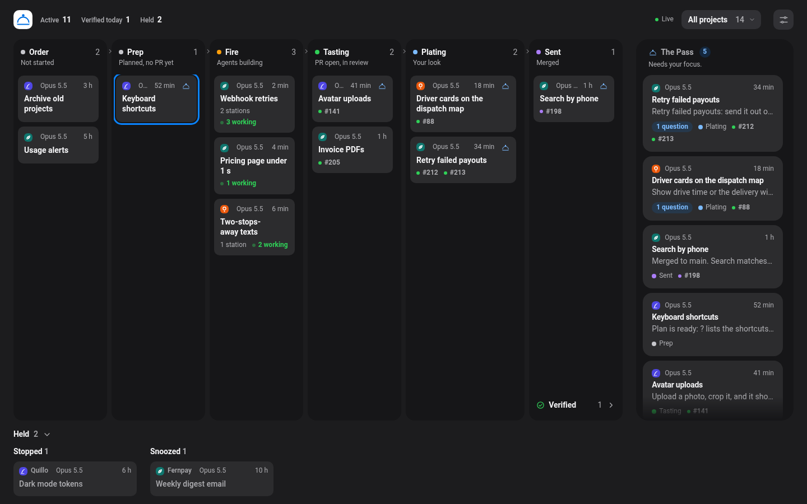
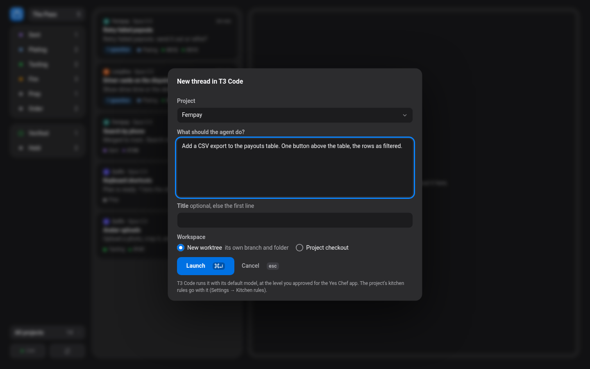
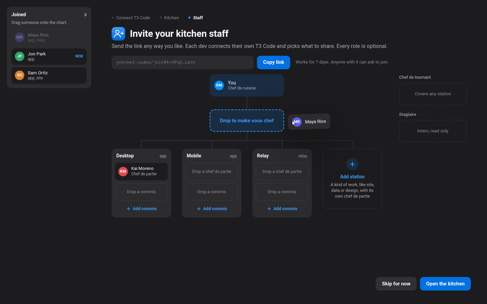
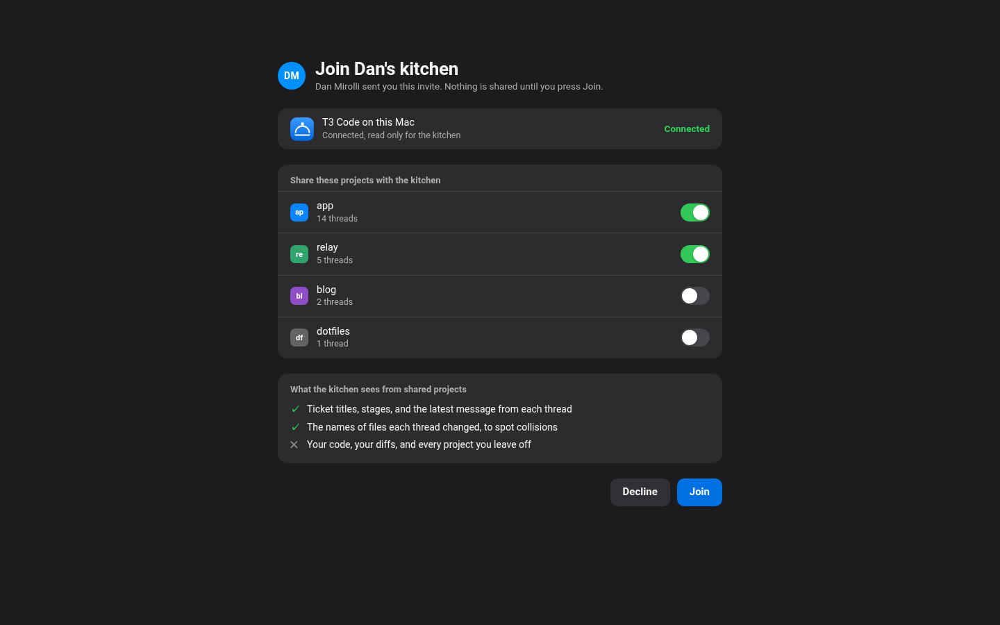

The French Brigade layer for agentic coding.The French Brigade layer for agentic dev teams.
Run T3 Code in our open-source layer, work The Pass like a Chef de Cuisine, and let your agents cook.Run your team’s T3 Code in our open-source layer, work The Pass like a Chef de Cuisine, and let every agent cook.
Your rules go out with every thread.Choose what waits for your Go.
Settings, Rules: how agents ask you, which bot reviews their pull requests, which tools they use. Set them for all projects or one. The Pass checks the calls that come back.A kitchen runs in one of two modes. You pick one when you open it, and switch in Settings, Rules, for all projects or one. Shared code waits for a Go in both.
What the agent gets, under your prompt
---
Rules (Yes Chef):
- A decision about anything I can see (a screen, a layout, a pill, copy on a page) shows a screenshot of each option, labelled with its letter. Mock up an option that is not built yet.
- CodeRabbit is the pull-request reviewer. Wait for its review and resolve each finding before you ask me to merge. Request no other review bot.
- Use Browserbase for all browser work. Local Chrome and computer use need my permission.
Open kitchen
Each dev ships under your repo’s own rules, and Plating on their tickets is their own look. Only the exceptions reach your pass.
CollisionShared codeUnplannedNot checked
French Brigade
Every ticket also waits at Plating for a Go from you or a sous chef you allow. Same board, one more kind of card.
CollisionShared codeUnplannedNot checkedPlating
We kept missing what our agents asked us.Nobody sees what your team’s agents are doing.
Running ten agents in T3 Code is easy. Keeping up with them was the hard part. We tried three fixes before we built Yes Chef.Each dev runs their own T3 Code, their own subscriptions and their own agents. T3 Code shows you your threads and nobody else’s.
- A coordinator thread. We ran an air traffic control thread to route the work. It became a feed of status updates, and the questions that needed us scrolled past.Who’s on what. Each dev’s threads live in their own T3 Code, where nobody else can see them. Standup is everyone reading theirs out loud.
- Agents grading their own work. We let agents review, fix and merge in a loop. Some of it reached production without the final look it needed.Two tickets, one file. Two devs’ agents rewrite the same file at the same time, and you find out when the second PR won’t rebase.
- T3 Code’s inbox. We hid working and settled threads. It still filled faster than we could clear it, and rulings got lost or backed up.Shared code. A change to auth or a contract merges before the people who build on it have seen it, and their tickets break.
So how does a hundred-year-old system from French cooking help your agents ship more code, better code, faster?So how does a hundred-year-old system from French cooking help a dev team ship more code, better code, faster?
French kitchens solved agentic coding a long time ago.
A great kitchen turns out creative, exacting work night after night, at volume, without it slipping. Escoffier’s French Brigade is how: every cook owns a station, every order is a ticket, many hands cook at once, and the Chef stays at the pass, where every plate is checked before it goes out. Yes Chef runs your agents the same way, on top of T3 Code, and you stay at the pass.A great kitchen turns out creative, exacting work night after night, at volume, without it slipping. Escoffier’s French Brigade is how. Every order is a ticket. Each station owns its part under its chef de partie, many hands cook at once, and the chef de cuisine checks every plate at the pass before it goes out. Yes Chef runs your team and its agents the same way, on top of T3 Code.
Only what needs you reaches you.
A question, a hand-back or a plate lands at the pass, oldest first. Threads still cooking stay on the board and out of your way.
Each dev keeps their own Pass.
Every dev runs their own agents from their own Pass. The kitchen gets a summary of each shared ticket: title, stage, last message, changed file names. Never code.
Each ticket arrives ready to rule.
The question with lettered options and the agent’s pick, the pull requests, and the agent’s screenshots, in one reader.
Exceptions reach you while both tickets cook.
Two devs in one file, a change to shared code, work that fits no course, a Mac that stopped reporting. You hear about it before the rebase fails.
Your call goes back to the thread.
A letter, Go, Refire with a note, or Hold. Yes Chef sends it to the agent’s T3 Code thread, and the next ticket opens.
Your call goes back to the dev’s agent.
Reply, Go, Refire or Hold goes to the dev’s Yes Chef. It checks your role, then acts through the dev’s own T3 Code sign-in.
Ship faster, spend fewer tokens, keep the bar.
One dev, many agents. Each agent waits on you less, nobody reads every thread to find the three that need you, and nothing skips your look.One lead, many devs, each with many agents. Devs keep shipping on their own, collisions surface early, and the work that needs a lead still gets one.
Agents wait less.
A question lands at the pass the moment the agent asks it. You answer with a letter key from the ticket, without opening the thread. J and K walk the pass, and ⌘↵ takes the agent’s pick.
Devs wait less.
Nobody waits for standup to find out who is in their file. A collision lands at your pass while both tickets cook, and one Reply reaches both devs.
The bar holds.
Plating waits for your call. Kitchen rules make agents wait for your reviewer and show screenshots of anything you can see, and a visual call with none gets flagged.
The bar holds.
Shared code waits for a Go in both modes. In French Brigade every ticket waits at Plating for you or a sous chef, on the same board.
Our coordinator threads ate 19% of our tokens.
Our air traffic control threads kept every ticket in their own context and ran to almost 1M tokens. Yes Chef keeps that on the board instead. We replayed our last 30 days of T3 Code usage with Yes Chef in their place. The replay used 19% fewer tokens, or 14% fewer if you already run auto-compaction.
| Scenario | Claude | Codex | Total | Estimated cost | Change from actual |
|---|---|---|---|---|---|
| Actual | 35.63B | 2.97B | 38.6B | about $12.3k | none |
| Auto Compact | 17.77B | 2.41B | 20.2B | about $8.3k | −48% |
| Yes Chef > ATC | 28.74B | 2.60B | 31.3B | about $10.5k | −19% |
| Both | 15.14B | 2.13B | 17.3B | about $7.4k | −55% |
Total processed tokens, Oct 8 to Nov 7. Bar scale 0 to 40B. Auto Compact caps Claude and Codex at 300k. Yes Chef > ATC removes all 12 ATC threads (7.26B).
These numbers are modeled from our logs, not measured, and yours will depend on how you work. Both assume a short-lived expo thread that starts fresh from the board. Keep one open all day like our old ATC threads and you save 3% or less. We have not measured the time saved yet, so this page gives no number for it.
How you run the Pass with ten agents.How you run the Pass over five devs.
Yes Chef reads your T3 Code threads and puts each one at a stage. Everything below works in the demo at the top of this page.Each dev’s tickets keep their stages. Your Pass shows the exceptions, and the kitchen shows everyone. Teams is in design. This is how the mocks work, and the demo at the top follows them.
- BacklogNot started. The thread has no run yet.
- PlannedNo pull request yet.
- In progressAgents building. The thread is running.
- In reviewA pull request is open.
- Ready to mergeYour look: the agent asks for a decision on an open pull request.
- MergedNot verified yet.
What lands at your pass
- QuestionA thread waits on a T3 Code question, at any stage. The options and the agent’s pick come with it.
- Hand-backThe agent finished its turn. You read its last message, then merge or approve it, reply, or settle it.
- Ready to mergeA hand-back that asks for a decision on an open pull request, with the screenshots.
Everything else stays on the board at its stage. V switches between the pass and the full kitchen.
What lands at a lead’s pass
- OverlapTwo devs’ tickets change the same file at the same time.
- Shared codeA ticket changes code others build on: contracts, protocol, auth.
- UnplannedWork that fits no project.
- Not checkedA dev’s Mac stopped reporting. Its tickets show when it was last seen.
- Ready to mergeBrigade only: every ticket waits for you or a deputy to merge it.
The full kitchen shows every dev’s tickets at their stage, by person or by project.
Your calls, from the keyboard
- A B C
- Pick an option while a question waits. The next one comes forward.
- ⌘ ↵
- The recommended action
- M
- Merge: the agent merges its pull request
- A
- Approve: no pull request yet, the agent goes ahead
- F
- Request changes: say what to fix
- R
- Reply with a note
- H
- Hold until 8:00 tomorrow
- E
- Settle: done, it leaves the pass
- Z
- Undo the send, for 4 seconds
- J K
- Next and previous ticket
- ⌘ K
- Actions: search every action, thread and setting
- ⌘ T
- New thread in T3 Code, with your rules
Each call is a T3 Code call, capped by the access you granted. ? lists every key.
Your calls, on each card
- Reply
- A note to one dev, or to both sides of an overlap
- Merge
- Merge a shared code change, or a Brigade ticket
- Request changes
- Back to In progress, with what to fix
- Hold
- Hold it until 8:00 tomorrow
- It’s fine
- Clear the card. The dev keeps working.
- Add to a project
- Put unplanned work in a project
- J K
- Next and previous card
- Z
- Undo, for 4 seconds
Your call goes sealed to the dev’s Yes Chef. It checks your role, then acts through the dev’s own T3 Code sign-in. A Merge becomes a message to the dev’s agent.
Start with the T3 Code you already run.Open a kitchen and send one link.
Yes Chef is a Mac app. It adds no agents of its own: T3 Code runs them, and Yes Chef shows you the line and carries your calls.No accounts of our own. The invite link is the membership, and each dev connects their own T3 Code. Teams is in design. These screens are mocks.
Sign in with T3 Code.Open a kitchen.
T3 Connect opens. You approve Yes Chef in T3 Code and choose what it may do, from read only to full access. Your sign-in is the only credential Yes Chef holds, and you can revoke it in T3 Code.Download Yes Chef, connect your T3 Code, and pick how the kitchen ships: Open kitchen or French Brigade. You can switch any time.
Your threads become tickets.Invite your staff.
Your T3 Code projects show up on the board. A thread is a ticket, its subagents are its stations, and its pull requests set the stage. A thread that needs you lands at the pass.One link, sent any way. Add stations as the team grows, and give each person a title when they join: sous chef, chef de partie, commis. Every role is optional.
Launch from the Pass.They join from their own Mac.
⌘T starts a new thread in T3 Code, in a new worktree or the project checkout, with your kitchen rules under the prompt. Threads you start in T3 Code show up too.Each dev opens the link, connects their own T3 Code, switches on the projects to share and presses Join. Nothing is shared before Join, and they can stop sharing any time.



